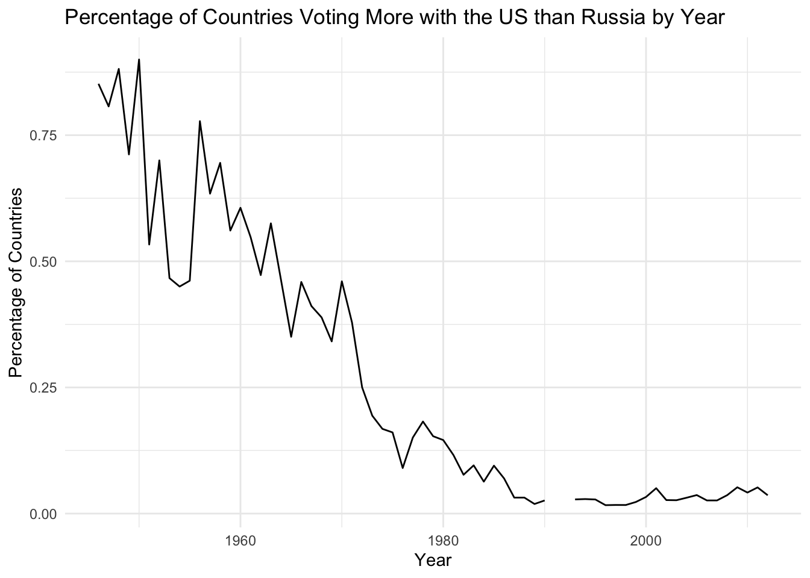
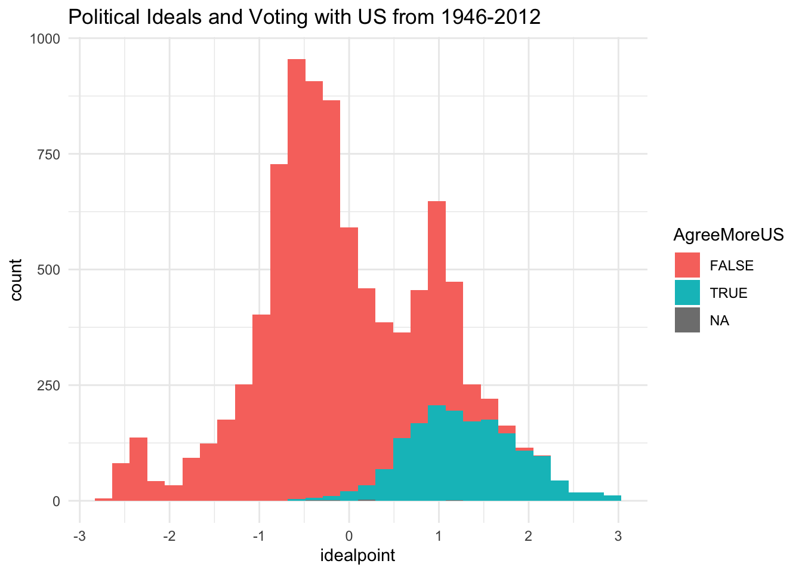

── Attaching core tidyverse packages ──────────────────────── tidyverse 2.0.0 ──
✔ dplyr 1.1.4 ✔ readr 2.1.5
✔ forcats 1.0.0 ✔ stringr 1.5.1
✔ ggplot2 3.5.2 ✔ tibble 3.2.1
✔ lubridate 1.9.4 ✔ tidyr 1.3.1
✔ purrr 1.0.4
── Conflicts ────────────────────────────────────────── tidyverse_conflicts() ──
✖ dplyr::filter() masks stats::filter()
✖ dplyr::lag() masks stats::lag()
ℹ Use the conflicted package (<http://conflicted.r-lib.org/>) to force all conflicts to become errors
un <-read_csv(here::here('Exercises', 'un-voting', 'data', 'unvoting.csv'))
Rows: 9120 Columns: 6
── Column specification ────────────────────────────────────────────────────────
Delimiter: ","
chr (2): CountryAbb, CountryName
dbl (4): Year, idealpoint, PctAgreeUS, PctAgreeRUSSIA
ℹ Use `spec()` to retrieve the full column specification for this data.
ℹ Specify the column types or set `show_col_types = FALSE` to quiet this message.
un
# A tibble: 9,120 × 6
Year CountryAbb CountryName idealpoint PctAgreeUS PctAgreeRUSSIA
<dbl> <chr> <chr> <dbl> <dbl> <dbl>
1 1946 USA United States of Ameri… 1.71 1 0.214
2 1947 USA United States of Ameri… 1.81 1 0.263
3 1948 USA United States of Ameri… 1.94 1 0.127
4 1949 USA United States of Ameri… 1.88 1 0.111
5 1950 USA United States of Ameri… 1.81 1 0.173
6 1951 USA United States of Ameri… 1.83 1 0.12
7 1952 USA United States of Ameri… 1.90 1 0.143
8 1953 USA United States of Ameri… 1.69 1 0.2
9 1954 USA United States of Ameri… 1.48 1 0.2
10 1955 USA United States of Ameri… 1.72 1 0.148
# ℹ 9,110 more rows
Like legislators in the US Congress, the member states of the United Nations (UN) are politically divided on many issues such as trade, nuclear disarmament, and human rights. During the Cold War, countries in the UN General Assembly tended to split into two factions: one led by the capitalist United States and the other by the communist Soviet Union. In this exercise we will analyze how states’ ideological positions, as captured by their votes on UN resolutions, have changed since the fall of communism.
In the analysis that follows, we measure state preferences in two ways. First, we can use the percentage of votes by each country that coincide with votes on the same issue cast by the two major Cold War powers: the United States and the Soviet Union. For example, if a country voted for ten resolutions in 1992, and if its vote matched the United States’s vote on exactly six of these resolutions, the variable PctAgreeUS in 1992 would equal 60 for this country. Second, we can also measure state preferences in terms of numerical ideal points (idealpoint). These ideal points capture what international relations scholars have called countries’ liberalism on issues such as political freedom, democratization, and financial liberalization. The two measures are highly correlated, with larger (more liberal) ideal points corresponding to a higher percentage of votes that agree with the United States.
Let’s look at how idealpoint has varied over time. Calculate the mean of idealpoint by year and make a line plot (geom_line()) with the year as the x-axis and the mean idealpoint as the y-axis.
un |>group_by(Year) |>summarise(idealpoint =mean(idealpoint)) |>ggplot(aes(x = Year, y = idealpoint)) +geom_line() +theme_minimal() +labs(title ="Mean Political Ideal Across the United Nations by Year",subtitle ="(Higher Values = More Liberal)",y ="Mean Political Ideal" )
Repeat this exercise with PctAgreeUS and PctAgreeRUSSIA.
pct_agree_by_year <- un |>group_by(Year) |>summarise(US =mean(PctAgreeUS),Russia =mean(PctAgreeRUSSIA) )
pct_agree_by_year |>ggplot(aes(x = Year, y = US)) +geom_line() +theme_minimal() +labs(title ="Vote Share in Agreement with the US by Year" )
pct_agree_by_year |>ggplot(aes(x = Year, y = Russia)) +geom_line() +theme_minimal() +labs(title ="Vote Share in Agreement with Russia by Year" )
I’m also going to show you how to get both vote shares on the same plot. We are not covering tidyr in this bootcamp, but the tidyr function pivot_longer() allows us to take a “wide” dataset (data in columns) and “lengthen” it so that the information stored in the columns become rows.
For example, look at the first 5 rows (1946-1950) of pct_agree_by_year.
pct_agree_by_year[1:5,]
# A tibble: 5 × 3
Year US Russia
<dbl> <dbl> <dbl>
1 1946 0.585 0.362
2 1947 0.621 0.383
3 1948 0.578 0.279
4 1949 0.541 0.377
5 1950 0.635 0.312
Using pivot_longer() on the US and Russia columns, we get 10 rows: 5 for US and 5 for Russia.
# A tibble: 10 × 3
Year country pct_agree
<dbl> <chr> <dbl>
1 1946 US 0.585
2 1946 Russia 0.362
3 1947 US 0.621
4 1947 Russia 0.383
5 1948 US 0.578
6 1948 Russia 0.279
7 1949 US 0.541
8 1949 Russia 0.377
9 1950 US 0.635
10 1950 Russia 0.312
We can use this to combine the two plots we made above into
pivot_longer( pct_agree_by_year,cols =c(US, Russia),names_to ="country",values_to ="pct_agree") |>ggplot(aes(x = Year, y = pct_agree, color = country)) +geom_line() +theme_minimal() +labs(title ="Vote Share Agreement in UN by Year",color ="Country",y ="Percent of UN Votes" )
Create a new variable, AgreeMoreUS, that is TRUE when PctAgreeUS is greater than PctAgreeRUSSIA. Use AgreeMoreUS to create a new line plot showing what percentage of countries vote more with the US than Russia over time.
un <- un |>mutate(AgreeMoreUS = PctAgreeUS > PctAgreeRUSSIA)
un |>group_by(Year) |>summarise(PropAgreeMoreUS =mean(AgreeMoreUS)) |>ggplot(aes(x = Year, y = PropAgreeMoreUS)) +geom_line() +theme_minimal() +labs(title ="Percentage of Countries Voting More with the US than Russia by Year",y ="Percentage of Countries" )

Let’s look at how idealpoint varies with AgreeMoreUS across all countries and years. Use a histogram. Then produce the same plot but only for the years 1980 and 2000 (about one decade before and after the fall of the Berlin Wall). How do the two variables relate to each other? How do they vary over time? Does their relationship to one another change over time?
ggplot(un, aes(x = idealpoint, fill = AgreeMoreUS)) +geom_histogram() +theme_minimal() +labs(title ="Political Ideals and Voting with US from 1946-2012" )
`stat_bin()` using `bins = 30`. Pick better value with `binwidth`.

un |>filter(Year ==1980) |>ggplot(aes(x = idealpoint, fill = AgreeMoreUS)) +geom_histogram() +theme_minimal() +labs(title ="Political Ideals and Voting with US in 1980" )
`stat_bin()` using `bins = 30`. Pick better value with `binwidth`.
un |>filter(Year ==2000) |>ggplot(aes(x = idealpoint, fill = AgreeMoreUS)) +geom_histogram() +theme_minimal() +labs(title ="Political Ideals and Voting with US in 2000" )
`stat_bin()` using `bins = 30`. Pick better value with `binwidth`.
Calculate the percentage of votes where the US and Russia agree by year and create a line graph. How does this change over time? Are there clear temporal patterns?
un |>filter(CountryAbb =="USA") |>mutate(PctAgree =1- (PctAgreeUS - PctAgreeRUSSIA)) |>ggplot(aes(x = Year, y = PctAgree)) +geom_line() +theme_minimal() +labs(title ="Percent of UN Votes where Russia and the US Agree",y ="Percent of Votes" )
Calculate the number of years that each country voted more with the US than Russia. Which countries voted the most years with the US over Russia?
un |>group_by(CountryName) |>summarise(YearsAgreeMoreUS =sum(AgreeMoreUS)) |>arrange(desc(YearsAgreeMoreUS))
# A tibble: 197 × 2
CountryName YearsAgreeMoreUS
<chr> <int>
1 United States of America 66
2 Israel 62
3 United Kingdom 50
4 Canada 44
5 France 44
6 Belgium 40
7 Luxembourg 40
8 Netherlands 40
9 Australia 37
10 Norway 35
# ℹ 187 more rows
Let’s look at the former Soviet Union countries. I’ve provided a vector former_soviet_union that includes the names of all the countries in the former Soviet Union.